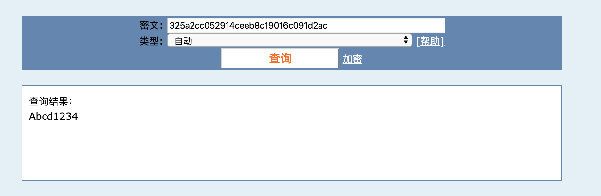
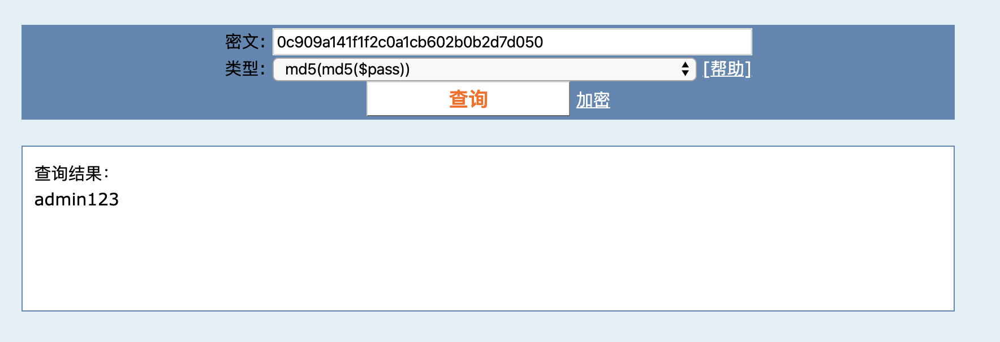
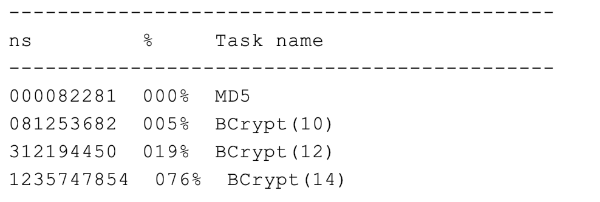
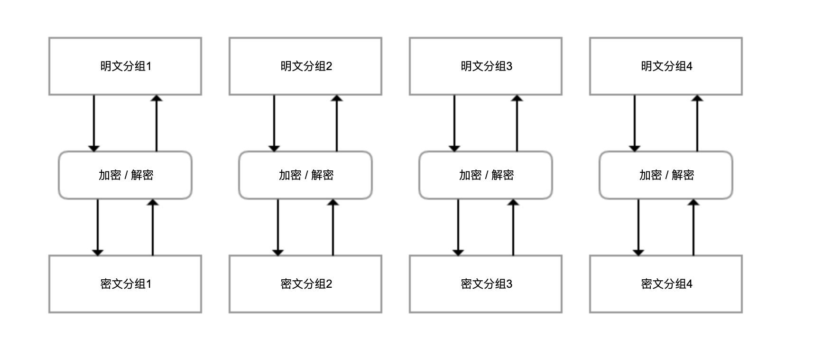
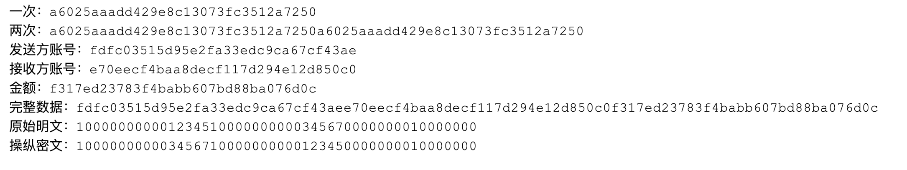
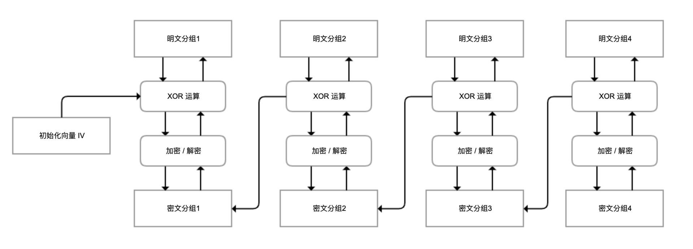
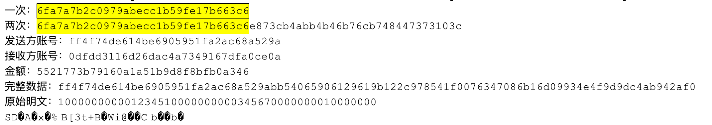
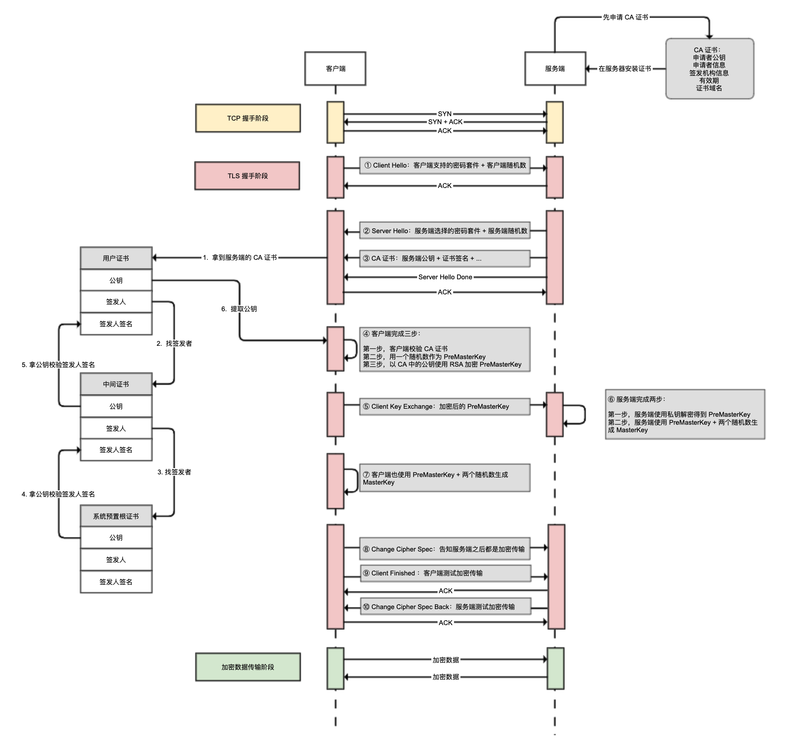

- 00 开篇词 业务代码真的会有这么多坑？.md.html
- 01 使用了并发工具类库，线程安全就高枕无忧了吗？.md.html
- 02 代码加锁：不要让“锁”事成为烦心事.md.html
- 03 线程池：业务代码最常用也最容易犯错的组件.md.html
- 04 连接池：别让连接池帮了倒忙.md.html
- 05 HTTP调用：你考虑到超时、重试、并发了吗？.md.html
- 06 2成的业务代码的Spring声明式事务，可能都没处理正确.md.html
- 07 数据库索引：索引并不是万能药.md.html
- 08 判等问题：程序里如何确定你就是你？.md.html
- 09 数值计算：注意精度、舍入和溢出问题.md.html
- 10 集合类：坑满地的List列表操作.md.html
- 11 空值处理：分不清楚的null和恼人的空指针.md.html
- 12 异常处理：别让自己在出问题的时候变为瞎子.md.html
- 13 日志：日志记录真没你想象的那么简单.md.html
- 14 文件IO：实现高效正确的文件读写并非易事.md.html
- 15 序列化：一来一回你还是原来的你吗？.md.html
- 16 用好Java 8的日期时间类，少踩一些“老三样”的坑.md.html
- 17 别以为“自动挡”就不可能出现OOM.md.html
- 18 当反射、注解和泛型遇到OOP时，会有哪些坑？.md.html
- 19 Spring框架：IoC和AOP是扩展的核心.md.html
- 20 Spring框架：框架帮我们做了很多工作也带来了复杂度.md.html
- 21 代码重复：搞定代码重复的三个绝招.md.html
- 22 接口设计：系统间对话的语言，一定要统一.md.html
- 23 缓存设计：缓存可以锦上添花也可以落井下石.md.html
- 24 业务代码写完，就意味着生产就绪了？.md.html
- 25 异步处理好用，但非常容易用错.md.html
- 26 数据存储：NoSQL与RDBMS如何取长补短、相辅相成？.md.html
- 27 数据源头：任何客户端的东西都不可信任.md.html
- 28 安全兜底：涉及钱时，必须考虑防刷、限量和防重.md.html
- 29 数据和代码：数据就是数据，代码就是代码.md.html
- 30 如何正确保存和传输敏感数据？.md.html
- 31 加餐1：带你吃透课程中Java 8的那些重要知识点（一）.md.html
- 32 加餐2：带你吃透课程中Java 8的那些重要知识点（二）.md.html
- 33 加餐3：定位应用问题，排错套路很重要.md.html
- 34 加餐4：分析定位Java问题，一定要用好这些工具（一）.md.html
- 35 加餐5：分析定位Java问题，一定要用好这些工具（二）.md.html
- 36 加餐6：这15年来，我是如何在工作中学习技术和英语的？.md.html
- 37 加餐7：程序员成长28计.md.html
- 38 加餐8：Java程序从虚拟机迁移到Kubernetes的一些坑.md.html
- 答疑篇：代码篇思考题集锦（一）.md.html
- 答疑篇：代码篇思考题集锦（三）.md.html
- 答疑篇：代码篇思考题集锦（二）.md.html
- 答疑篇：加餐篇思考题答案合集.md.html
- 答疑篇：安全篇思考题答案合集.md.html
- 答疑篇：设计篇思考题答案合集.md.html
- 结束语 写代码时，如何才能尽量避免踩坑？.md.html
30 如何正确保存和传输敏感数据？
你好，我是朱晔。
今天，我们从安全角度来聊聊用户名、密码、身份证等敏感信息，应该怎么保存和传输。同时，你还可以进一步复习加密算法中的散列、对称加密和非对称加密算法，以及 HTTPS 等相关知识。
应该怎样保存用户密码？
最敏感的数据恐怕就是用户的密码了。黑客一旦窃取了用户密码，或许就可以登录进用户的账号，消耗其资产、发布不良信息等；更可怕的是，有些用户至始至终都是使用一套密码，密码一旦泄露，就可以被黑客用来登录全网。
为了防止密码泄露，最重要的原则是不要保存用户密码。你可能会觉得很好笑，不保存用户密码，之后用户登录的时候怎么验证？其实，我指的是不保存原始密码，这样即使拖库也不会泄露用户密码。
我经常会听到大家说，不要明文保存用户密码，应该把密码通过 MD5 加密后保存。这的确是一个正确的方向，但这个说法并不准确。
首先，MD5 其实不是真正的加密算法。所谓加密算法，是可以使用密钥把明文加密为密文，随后还可以使用密钥解密出明文，是双向的。
而 MD5 是散列、哈希算法或者摘要算法。不管多长的数据，使用 MD5 运算后得到的都是固定长度的摘要信息或指纹信息，无法再解密为原始数据。所以，MD5 是单向的。最重要的是，仅仅使用 MD5 对密码进行摘要，并不安全。
比如，使用如下代码在保持用户信息时，对密码进行了 MD5 计算：
UserData userData = new UserData();
userData.setId(1L);
userData.setName(name);
//密码字段使用MD5哈希后保存
userData.setPassword(DigestUtils.md5Hex(password));
return userRepository.save(userData);
通过输出，可以看到密码是 32 位的 MD5：
"password": "325a2cc052914ceeb8c19016c091d2ac"
到某 MD5 破解网站上输入这个 MD5，不到 1 秒就得到了原始密码：

其实你可以想一下，虽然 MD5 不可解密，但是我们可以构建一个超大的数据库，把所有 20 位以内的数字和字母组合的密码全部计算一遍 MD5 存进去，需要解密的时候搜索一下 MD5 就可以得到原始值了。这就是字典表。
目前，有些 MD5 解密网站使用的是彩虹表，是一种使用时间空间平衡的技术，即可以使用更大的空间来降低破解时间，也可以使用更长的破解时间来换取更小的空间。
此外，你可能会觉得多次 MD5 比较安全，其实并不是这样。比如，如下代码使用两次 MD5 进行摘要：
userData.setPassword(DigestUtils.md5Hex(DigestUtils.md5Hex( password)));
得到下面的 MD5：
"password": "ebbca84993fe002bac3a54e90d677d09"
也可以破解出密码，并且破解网站还告知我们这是两次 MD5 算法：

所以直接保存 MD5 后的密码是不安全的。一些同学可能会说，还需要加盐。是的，但是加盐如果不当，还是非常不安全，比较重要的有两点。
第一，不能在代码中写死盐，且盐需要有一定的长度，比如这样：
userData.setPassword(DigestUtils.md5Hex("salt" + password));
得到了如下 MD5：
"password": "58b1d63ed8492f609993895d6ba6b93a"
对于这样一串 MD5，虽然破解网站上找不到原始密码，但是黑客可以自己注册一个账号，使用一个简单的密码，比如 1：
"password": "55f312f84e7785aa1efa552acbf251db"
然后，再去破解网站试一下这个 MD5，就可以得到原始密码是 salt，也就知道了盐值是 salt：
其实，知道盐是什么没什么关系，关键的是我们是在代码里写死了盐，并且盐很短、所有用户都是这个盐。这么做有三个问题：
因为盐太短、太简单了，如果用户原始密码也很简单，那么整个拼起来的密码也很短，这样一般的 MD5 破解网站都可以直接解密这个 MD5，除去盐就知道原始密码了。
相同的盐，意味着使用相同密码的用户 MD5 值是一样的，知道了一个用户的密码就可能知道了多个。
我们也可以使用这个盐来构建一张彩虹表，虽然会花不少代价，但是一旦构建完成，所有人的密码都可以被破解。
所以，最好是每一个密码都有独立的盐，并且盐要长一点，比如超过 20 位。
第二，虽然说每个人的盐最好不同，但我也不建议将一部分用户数据作为盐。比如，使用用户名作为盐：
userData.setPassword(DigestUtils.md5Hex(name + password));
如果世界上所有的系统都是按照这个方案来保存密码，那么 root、admin 这样的用户使用再复杂的密码也总有一天会被破解，因为黑客们完全可以针对这些常用用户名来做彩虹表。所以，盐最好是随机的值，并且是全球唯一的，意味着全球不可能有现成的彩虹表给你用。
正确的做法是，使用全球唯一的、和用户无关的、足够长的随机值作为盐。比如，可以使用 UUID 作为盐，把盐一起保存到数据库中：
userData.setSalt(UUID.randomUUID().toString());
userData.setPassword(DigestUtils.md5Hex(userData.getSalt() + password));
并且每次用户修改密码的时候都重新计算盐，重新保存新的密码。你可能会问，盐保存在数据库中，那被拖库了不是就可以看到了吗？难道不应该加密保存吗？
在我看来，盐没有必要加密保存。盐的作用是，防止通过彩虹表快速实现密码“解密”，如果用户的盐都是唯一的，那么生成一次彩虹表只可能拿到一个用户的密码，这样黑客的动力会小很多。
更好的做法是，不要使用像 MD5 这样快速的摘要算法，而是使用慢一点的算法。比如 Spring Security 已经废弃了 MessageDigestPasswordEncoder，推荐使用 BCryptPasswordEncoder，也就是BCrypt来进行密码哈希。BCrypt 是为保存密码设计的算法，相比 MD5 要慢很多。
写段代码来测试一下 MD5，以及使用不同代价因子的 BCrypt，看看哈希一次密码的耗时。
private static BCryptPasswordEncoder passwordEncoder = new BCryptPasswordEncoder();
@GetMapping("performance")
public void performance() {
StopWatch stopWatch = new StopWatch();
String password = "Abcd1234";
stopWatch.start("MD5");
//MD5
DigestUtils.md5Hex(password);
stopWatch.stop();
stopWatch.start("BCrypt(10)");
//代价因子为10的BCrypt
String hash1 = BCrypt.gensalt(10);
BCrypt.hashpw(password, hash1);
System.out.println(hash1);
stopWatch.stop();
stopWatch.start("BCrypt(12)");
//代价因子为12的BCrypt
String hash2 = BCrypt.gensalt(12);
BCrypt.hashpw(password, hash2);
System.out.println(hash2);
stopWatch.stop();
stopWatch.start("BCrypt(14)");
//代价因子为14的BCrypt
String hash3 = BCrypt.gensalt(14);
BCrypt.hashpw(password, hash3);
System.out.println(hash3);
stopWatch.stop();
log.info("{}", stopWatch.prettyPrint());
}
可以看到，MD5 只需要 0.8 毫秒，而三次 BCrypt 哈希（代价因子分别设置为 10、12 和 14）耗时分别是 82 毫秒、312 毫秒和 1.2 秒：

也就是说，如果制作 8 位密码长度的 MD5 彩虹表需要 5 个月，那么对于 BCrypt 来说，可能就需要几十年，大部分黑客应该都没有这个耐心。
我们写一段代码观察下，BCryptPasswordEncoder 生成的密码哈希的规律：
@GetMapping("better")
public UserData better(@RequestParam(value = "name", defaultValue = "zhuye") String name, @RequestParam(value = "password", defaultValue = "Abcd1234") String password) {
UserData userData = new UserData();
userData.setId(1L);
userData.setName(name);
//保存哈希后的密码
userData.setPassword(passwordEncoder.encode(password));
userRepository.save(userData);
//判断密码是否匹配
log.info("match ? {}", passwordEncoder.matches(password, userData.getPassword()));
return userData;
}
我们可以发现三点规律。
第一，我们调用 encode、matches 方法进行哈希、做密码比对的时候，不需要传入盐。BCrypt 把盐作为了算法的一部分，强制我们遵循安全保存密码的最佳实践。
第二，生成的盐和哈希后的密码拼在了一起：$是字段分隔符，其中第一个$后的 2a 代表算法版本，第二个$后的 10 是代价因子（默认是 10，代表 2 的 10 次方次哈希），第三个$后的 22 个字符是盐，再后面是摘要。所以说，我们不需要使用单独的数据库字段来保存盐。
"password": "$2a$10$wPWdQwfQO2lMxqSIb6iCROXv7lKnQq5XdMO96iCYCj7boK9pk6QPC"
//格式为：$<ver>$<cost>$<salt><digest>
第三，代价因子的值越大，BCrypt 哈希的耗时越久。因此，对于代价因子的值，更建议的实践是，根据用户的忍耐程度和硬件，设置一个尽可能大的值。
最后，我们需要注意的是，虽然黑客已经很难通过彩虹表来破解密码了，但是仍然有可能暴力破解密码，也就是对于同一个用户名使用常见的密码逐一尝试登录。因此，除了做好密码哈希保存的工作外，我们还要建设一套完善的安全防御机制，在感知到暴力破解危害的时候，开启短信验证、图形验证码、账号暂时锁定等防御机制来抵御暴力破解。
应该怎么保存姓名和身份证？
我们把姓名和身份证，叫做二要素。
现在互联网非常发达，很多服务都可以在网上办理，很多网站仅仅依靠二要素来确认你是谁。所以，二要素是比较敏感的数据，如果在数据库中明文保存，那么数据库被攻破后，黑客就可能拿到大量的二要素信息。如果这些二要素被用来申请贷款等，后果不堪设想。
之前我们提到的单向散列算法，显然不适合用来加密保存二要素，因为数据无法解密。这个时候，我们需要选择真正的加密算法。可供选择的算法，包括对称加密和非对称加密算法两类。
对称加密算法，是使用相同的密钥进行加密和解密。使用对称加密算法来加密双方的通信的话，双方需要先约定一个密钥，加密方才能加密，接收方才能解密。如果密钥在发送的时候被窃取，那么加密就是白忙一场。因此，这种加密方式的特点是，加密速度比较快，但是密钥传输分发有泄露风险。
非对称加密算法，或者叫公钥密码算法。公钥密码是由一对密钥对构成的，使用公钥或者说加密密钥来加密，使用私钥或者说解密密钥来解密，公钥可以任意公开，私钥不能公开。使用非对称加密的话，通信双方可以仅分享公钥用于加密，加密后的数据没有私钥无法解密。因此，这种加密方式的特点是，加密速度比较慢，但是解决了密钥的配送分发安全问题。
但是，对于保存敏感信息的场景来说，加密和解密都是我们的服务端程序，不太需要考虑密钥的分发安全性，也就是说使用非对称加密算法没有太大的意义。在这里，我们使用对称加密算法来加密数据。
接下来，我就重点与你说说对称加密算法。对称加密常用的加密算法，有 DES、3DES 和 AES。
虽然，现在仍有许多老项目使用了 DES 算法，但我不推荐使用。在 1999 年的 DES 挑战赛 3 中，DES 密码破解耗时不到一天，而现在 DES 密码破解更快，使用 DES 来加密数据非常不安全。因此，在业务代码中要避免使用 DES 加密。
而 3DES 算法，是使用不同的密钥进行三次 DES 串联调用，虽然解决了 DES 不够安全的问题，但是比 AES 慢，也不太推荐。
AES 是当前公认的比较安全，兼顾性能的对称加密算法。不过严格来说，AES 并不是实际的算法名称，而是算法标准。2000 年，NIST 选拔出 Rijndael 算法作为 AES 的标准。
AES 有一个重要的特点就是分组加密体制，一次只能处理 128 位的明文，然后生成 128 位的密文。如果要加密很长的明文，那么就需要迭代处理，而迭代方式就叫做模式。网上很多使用 AES 来加密的代码，使用的是最简单的 ECB 模式（也叫电子密码本模式），其基本结构如下：

可以看到，这种结构有两个风险：明文和密文是一一对应的，如果明文中有重复的分组，那么密文中可以观察到重复，掌握密文的规律；因为每一个分组是独立加密和解密的 ，如果密文分组的顺序，也可以反过来操纵明文，那么就可以实现不解密密文的情况下，来修改明文。
我们写一段代码来测试下。在下面的代码中，我们使用 ECB 模式测试：
加密一段包含 16 个字符的字符串，得到密文 A；然后把这段字符串复制一份成为一个 32 个字符的字符串，再进行加密得到密文 B。我们验证下密文 B 是不是重复了一遍的密文 A。
模拟银行转账的场景，假设整个数据由发送方账号、接收方账号、金额三个字段构成。我们尝试改变密文中数据的顺序来操纵明文。
private static final String KEY = "secretkey1234567"; //密钥
//测试ECB模式
@GetMapping("ecb")
public void ecb() throws Exception {
Cipher cipher = Cipher.getInstance("AES/ECB/NoPadding");
test(cipher, null);
}
//获取加密秘钥帮助方法
private static SecretKeySpec setKey(String secret) {
return new SecretKeySpec(secret.getBytes(), "AES");
}
//测试逻辑
private static void test(Cipher cipher, AlgorithmParameterSpec parameterSpec) throws Exception {
//初始化Cipher
cipher.init(Cipher.ENCRYPT_MODE, setKey(KEY), parameterSpec);
//加密测试文本
System.out.println("一次：" + Hex.encodeHexString(cipher.doFinal("abcdefghijklmnop".getBytes())));
//加密重复一次的测试文本
System.out.println("两次：" + Hex.encodeHexString(cipher.doFinal("abcdefghijklmnopabcdefghijklmnop".getBytes())));
//下面测试是否可以通过操纵密文来操纵明文
//发送方账号
byte[] sender = "1000000000012345".getBytes();
//接收方账号
byte[] receiver = "1000000000034567".getBytes();
//转账金额
byte[] money = "0000000010000000".getBytes();
//加密发送方账号
System.out.println("发送方账号：" + Hex.encodeHexString(cipher.doFinal(sender)));
//加密接收方账号
System.out.println("接收方账号：" + Hex.encodeHexString(cipher.doFinal(receiver)));
//加密金额
System.out.println("金额：" + Hex.encodeHexString(cipher.doFinal(money)));
//加密完整的转账信息
byte[] result = cipher.doFinal(ByteUtils.concatAll(sender, receiver, money));
System.out.println("完整数据：" + Hex.encodeHexString(result));
//用于操纵密文的临时字节数组
byte[] hack = new byte[result.length];
//把密文前两段交换
System.arraycopy(result, 16, hack, 0, 16);
System.arraycopy(result, 0, hack, 16, 16);
System.arraycopy(result, 32, hack, 32, 16);
cipher.init(Cipher.DECRYPT_MODE, setKey(KEY), parameterSpec);
//尝试解密
System.out.println("原始明文：" + new String(ByteUtils.concatAll(sender, receiver, money)));
System.out.println("操纵密文：" + new String(cipher.doFinal(hack)));
}
输出如下：

可以看到：
两个相同明文分组产生的密文，就是两个相同的密文分组叠在一起。
在不知道密钥的情况下，我们操纵密文实现了对明文数据的修改，对调了发送方账号和接收方账号。
所以说，ECB 模式虽然简单，但是不安全，不推荐使用。我们再看一下另一种常用的加密模式，CBC 模式。
CBC 模式，在解密或解密之前引入了 XOR 运算，第一个分组使用外部提供的初始化向量 IV，从第二个分组开始使用前一个分组的数据，这样即使明文是一样的，加密后的密文也是不同的，并且分组的顺序不能任意调换。这就解决了 ECB 模式的缺陷：

我们把之前的代码修改为 CBC 模式，再次进行测试：
private static final String initVector = "abcdefghijklmnop"; //初始化向量
@GetMapping("cbc")
public void cbc() throws Exception {
Cipher cipher = Cipher.getInstance("AES/CBC/NoPadding");
IvParameterSpec iv = new IvParameterSpec(initVector.getBytes("UTF-8"));
test(cipher, iv);
}
可以看到，相同的明文字符串复制一遍得到的密文并不是重复两个密文分组，并且调换密文分组的顺序无法操纵明文：

其实，除了 ECB 模式和 CBC 模式外，AES 算法还有 CFB、OFB、CTR 模式，你可以参考这里了解它们的区别。《实用密码学》一书比较推荐的是 CBC 和 CTR 模式。还需要注意的是，ECB 和 CBC 模式还需要设置合适的填充模式，才能处理超过一个分组的数据。
对于敏感数据保存，除了选择 AES+ 合适模式进行加密外，我还推荐以下几个实践：
不要在代码中写死一个固定的密钥和初始化向量，最好和之前提到的盐一样，是唯一、独立并且每次都变化的。
推荐使用独立的加密服务来管控密钥、做加密操作，千万不要把密钥和密文存在一个数据库，加密服务需要设置非常高的管控标准。
数据库中不能保存明文的敏感信息，但可以保存脱敏的信息。普通查询的时候，直接查脱敏信息即可。
接下来，我们按照这个策略完成相关代码实现。
第一步，对于用户姓名和身份证，我们分别保存三个信息，脱敏后的明文、密文和加密 ID。加密服务加密后返回密文和加密 ID，随后使用加密 ID 来请求加密服务进行解密：
@Data
@Entity
public class UserData {
@Id
private Long id;
private String idcard;//脱敏的身份证
private Long idcardCipherId;//身份证加密ID
private String idcardCipherText;//身份证密文
private String name;//脱敏的姓名
private Long nameCipherId;//姓名加密ID
private String nameCipherText;//姓名密文
}
第二步，加密服务数据表保存加密 ID、初始化向量和密钥。加密服务表中没有密文，实现了密文和密钥分离保存：
@Data
@Entity
public class CipherData {
@Id
@GeneratedValue(strategy = AUTO)
private Long id;
private String iv;//初始化向量
private String secureKey;//密钥
}
第三步，加密服务使用 GCM 模式（ Galois/Counter Mode）的 AES-256 对称加密算法，也就是 AES-256-GCM。
这是一种AEAD（Authenticated Encryption with Associated Data）认证加密算法，除了能实现普通加密算法提供的保密性之外，还能实现可认证性和密文完整性，是目前最推荐的 AES 模式。
使用类似 GCM 的 AEAD 算法进行加解密，除了需要提供初始化向量和密钥之外，还可以提供一个 AAD（附加认证数据，additional authenticated data），用于验证未包含在明文中的附加信息，解密时不使用加密时的 AAD 将解密失败。其实，GCM 模式的内部使用的就是 CTR 模式，只不过还使用了 GMAC 签名算法，对密文进行签名实现完整性校验。
接下来，我们实现基于 AES-256-GCM 的加密服务，包含下面的主要逻辑：
加密时允许外部传入一个 AAD 用于认证，加密服务每次都会使用新生成的随机值作为密钥和初始化向量。
在加密后，加密服务密钥和初始化向量保存到数据库中，返回加密 ID 作为本次加密的标识。
应用解密时，需要提供加密 ID、密文和加密时的 AAD 来解密。加密服务使用加密 ID，从数据库查询出密钥和初始化向量。
这段逻辑的实现代码比较长，我加了详细注释方便你仔细阅读：
@Service
public class CipherService {
//密钥长度
public static final int AES_KEY_SIZE = 256;
//初始化向量长度
public static final int GCM_IV_LENGTH = 12;
//GCM身份认证Tag长度
public static final int GCM_TAG_LENGTH = 16;
@Autowired
private CipherRepository cipherRepository;
//内部加密方法
public static byte[] doEncrypt(byte[] plaintext, SecretKey key, byte[] iv, byte[] aad) throws Exception {
//加密算法
Cipher cipher = Cipher.getInstance("AES/GCM/NoPadding");
//Key规范
SecretKeySpec keySpec = new SecretKeySpec(key.getEncoded(), "AES");
//GCM参数规范
GCMParameterSpec gcmParameterSpec = new GCMParameterSpec(GCM_TAG_LENGTH * 8, iv);
//加密模式
cipher.init(Cipher.ENCRYPT_MODE, keySpec, gcmParameterSpec);
//设置aad
if (aad != null)
cipher.updateAAD(aad);
//加密
byte[] cipherText = cipher.doFinal(plaintext);
return cipherText;
}
//内部解密方法
public static String doDecrypt(byte[] cipherText, SecretKey key, byte[] iv, byte[] aad) throws Exception {
//加密算法
Cipher cipher = Cipher.getInstance("AES/GCM/NoPadding");
//Key规范
SecretKeySpec keySpec = new SecretKeySpec(key.getEncoded(), "AES");
//GCM参数规范
GCMParameterSpec gcmParameterSpec = new GCMParameterSpec(GCM_TAG_LENGTH * 8, iv);
//解密模式
cipher.init(Cipher.DECRYPT_MODE, keySpec, gcmParameterSpec);
//设置aad
if (aad != null)
cipher.updateAAD(aad);
//解密
byte[] decryptedText = cipher.doFinal(cipherText);
return new String(decryptedText);
}
//加密入口
public CipherResult encrypt(String data, String aad) throws Exception {
//加密结果
CipherResult encryptResult = new CipherResult();
//密钥生成器
KeyGenerator keyGenerator = KeyGenerator.getInstance("AES");
//生成密钥
keyGenerator.init(AES_KEY_SIZE);
SecretKey key = keyGenerator.generateKey();
//IV数据
byte[] iv = new byte[GCM_IV_LENGTH];
//随机生成IV
SecureRandom random = new SecureRandom();
random.nextBytes(iv);
//处理aad
byte[] aaddata = null;
if (!StringUtils.isEmpty(aad))
aaddata = aad.getBytes();
//获得密文
encryptResult.setCipherText(Base64.getEncoder().encodeToString(doEncrypt(data.getBytes(), key, iv, aaddata)));
//加密上下文数据
CipherData cipherData = new CipherData();
//保存IV
cipherData.setIv(Base64.getEncoder().encodeToString(iv));
//保存密钥
cipherData.setSecureKey(Base64.getEncoder().encodeToString(key.getEncoded()));
cipherRepository.save(cipherData);
//返回本地加密ID
encryptResult.setId(cipherData.getId());
return encryptResult;
}
//解密入口
public String decrypt(long cipherId, String cipherText, String aad) throws Exception {
//使用加密ID找到加密上下文数据
CipherData cipherData = cipherRepository.findById(cipherId).orElseThrow(() -> new IllegalArgumentException("invlaid cipherId"));
//加载密钥
byte[] decodedKey = Base64.getDecoder().decode(cipherData.getSecureKey());
//初始化密钥
SecretKey originalKey = new SecretKeySpec(decodedKey, 0, decodedKey.length, "AES");
//加载IV
byte[] decodedIv = Base64.getDecoder().decode(cipherData.getIv());
//处理aad
byte[] aaddata = null;
if (!StringUtils.isEmpty(aad))
aaddata = aad.getBytes();
//解密
return doDecrypt(Base64.getDecoder().decode(cipherText.getBytes()), originalKey, decodedIv, aaddata);
}
}
第四步，分别实现加密和解密接口用于测试。
我们可以让用户选择，如果需要保护二要素的话，就自己输入一个查询密码作为 AAD。系统需要读取用户敏感信息的时候，还需要用户提供这个密码，否则无法解密。这样一来，即使黑客拿到了用户数据库的密文、加密服务的密钥和 IV，也会因为缺少 AAD 无法解密：
@Autowired
private CipherService cipherService;
//加密
@GetMapping("right")
public UserData right(@RequestParam(value = "name", defaultValue = "朱晔") String name,
@RequestParam(value = "idcard", defaultValue = "300000000000001234") String idCard,
@RequestParam(value = "aad", required = false)String aad) throws Exception {
UserData userData = new UserData();
userData.setId(1L);
//脱敏姓名
userData.setName(chineseName(name));
//脱敏身份证
userData.setIdcard(idCard(idCard));
//加密姓名
CipherResult cipherResultName = cipherService.encrypt(name,aad);
userData.setNameCipherId(cipherResultName.getId());
userData.setNameCipherText(cipherResultName.getCipherText());
//加密身份证
CipherResult cipherResultIdCard = cipherService.encrypt(idCard,aad);
userData.setIdcardCipherId(cipherResultIdCard.getId());
userData.setIdcardCipherText(cipherResultIdCard.getCipherText());
return userRepository.save(userData);
}
//解密
@GetMapping("read")
public void read(@RequestParam(value = "aad", required = false)String aad) throws Exception {
//查询用户信息
UserData userData = userRepository.findById(1L).get();
//使用AAD来解密姓名和身份证
log.info("name : {} idcard : {}",
cipherService.decrypt(userData.getNameCipherId(), userData.getNameCipherText(),aad),
cipherService.decrypt(userData.getIdcardCipherId(), userData.getIdcardCipherText(),aad));
}
//脱敏身份证
private static String idCard(String idCard) {
String num = StringUtils.right(idCard, 4);
return StringUtils.leftPad(num, StringUtils.length(idCard), "*");
}
//脱敏姓名
public static String chineseName(String chineseName) {
String name = StringUtils.left(chineseName, 1);
return StringUtils.rightPad(name, StringUtils.length(chineseName), "*");
访问加密接口获得如下结果，可以看到数据库表中只有脱敏数据和密文：
{"id":1,"name":"朱*","idcard":"**************1234","idcardCipherId":26346,"idcardCipherText":"t/wIh1XTj00wJP1Lt3aGzSvn9GcqQWEwthN58KKU4KZ4Tw==","nameCipherId":26347,"nameCipherText":"+gHrk1mWmveBMVUo+CYon8Zjj9QAtw=="}
访问解密接口，可以看到解密成功了：
[21:46:00.079] [http-nio-45678-exec-6] [INFO ] [o.g.t.c.s.s.StoreIdCardController:102 ] - name : 朱晔 idcard : 300000000000001234
如果 AAD 输入不对，会得到如下异常：
javax.crypto.AEADBadTagException: Tag mismatch!
at com.sun.crypto.provider.GaloisCounterMode.decryptFinal(GaloisCounterMode.java:578)
at com.sun.crypto.provider.CipherCore.finalNoPadding(CipherCore.java:1116)
at com.sun.crypto.provider.CipherCore.fillOutputBuffer(CipherCore.java:1053)
at com.sun.crypto.provider.CipherCore.doFinal(CipherCore.java:853)
at com.sun.crypto.provider.AESCipher.engineDoFinal(AESCipher.java:446)
at javax.crypto.Cipher.doFinal(Cipher.java:2164)
经过这样的设计，二要素就比较安全了。黑客要查询用户二要素的话，需要同时拿到密文、IV+ 密钥、AAD。而这三者可能由三方掌管，要全部拿到比较困难。
用一张图说清楚 HTTPS
我们知道，HTTP 协议传输数据使用的是明文。那在传输敏感信息的场景下，如果客户端和服务端中间有一个黑客作为中间人拦截请求，就可以窃听到这些数据，还可以修改客户端传过来的数据。这就是很大的安全隐患。
为解决这个安全隐患，有了 HTTPS 协议。HTTPS=SSL/TLS+HTTP，通过使用一系列加密算法来确保信息安全传输，以实现数据传输的机密性、完整性和权威性。
机密性：使用非对称加密来加密密钥，然后使用密钥来加密数据，既安全又解决了非对称加密大量数据慢的问题。你可以做一个实验来测试两者的差距。
完整性：使用散列算法对信息进行摘要，确保信息完整无法被中间人篡改。
权威性：使用数字证书，来确保我们是在和合法的服务端通信。
可以看出，理解 HTTPS 的流程，将有助于我们理解各种加密算法的区别，以及证书的意义。此外，SSL/TLS 还是混合加密系统的一个典范，如果你需要自己开发应用层数据加密系统，也可以参考它的流程。
那么，我们就来看看 HTTPS TLS 1.2 连接（RSA 握手）的整个过程吧。

作为准备工作，网站管理员需要申请并安装 CA 证书到服务端。CA 证书中包含非对称加密的公钥、网站域名等信息，密钥是服务端自己保存的，不会在任何地方公开。
建立 HTTPS 连接的过程，首先是 TCP 握手，然后是 TLS 握手的一系列工作，包括：
客户端告知服务端自己支持的密码套件（比如 TLS_RSA_WITH_AES_256_GCM_SHA384，其中 RSA 是密钥交换的方式，AES_256_GCM 是加密算法，SHA384 是消息验证摘要算法），提供客户端随机数。
服务端应答选择的密码套件，提供服务端随机数。
服务端发送 CA 证书给客户端，客户端验证 CA 证书（后面详细说明）。
客户端生成 PreMasterKey，并使用非对称加密 + 公钥加密 PreMasterKey。
客户端把加密后的 PreMasterKey 传给服务端。
服务端使用非对称加密 + 私钥解密得到 PreMasterKey，并使用 PreMasterKey+ 两个随机数，生成 MasterKey。
客户端也使用 PreMasterKey+ 两个随机数生成 MasterKey。
客户端告知服务端之后将进行加密传输。
客户端使用 MasterKey 配合对称加密算法，进行对称加密测试。
服务端也使用 MasterKey 配合对称加密算法，进行对称加密测试。
接下来，客户端和服务端的所有通信都是加密通信，并且数据通过签名确保无法篡改。你可能会问，客户端怎么验证 CA 证书呢？
其实，CA 证书是一个证书链，你可以看一下上图的左边部分：
从服务端拿到的 CA 证书是用户证书，我们需要通过证书中的签发人信息找到上级中间证书，再网上找到根证书。
根证书只有为数不多的权威机构才能生成，一般预置在 OS 中，根本无法伪造。
找到根证书后，提取其公钥来验证中间证书的签名，判断其权威性。
最后再拿到中间证书的公钥，验证用户证书的签名。
这，就验证了用户证书的合法性，然后再校验其有效期、域名等信息进一步验证有效性。
总结一下，TLS 通过巧妙的流程和算法搭配解决了传输安全问题：使用对称加密加密数据，使用非对称加密算法确保密钥无法被中间人解密；使用 CA 证书链认证，确保中间人无法伪造自己的证书和公钥。
如果网站涉及敏感数据的传输，必须使用 HTTPS 协议。作为用户，如果你看到网站不是 HTTPS 的或者看到无效证书警告，也不应该继续使用这个网站，以免敏感信息被泄露。
重点回顾
今天，我们一起学习了如何保存和传输敏感数据。我来带你回顾一下重点内容。
对于数据保存，你需要记住两点：
用户密码不能加密保存，更不能明文保存，需要使用全球唯一的、具有一定长度的、随机的盐，配合单向散列算法保存。使用 BCrypt 算法，是一个比较好的实践。
诸如姓名和身份证这种需要可逆解密查询的敏感信息，需要使用对称加密算法保存。我的建议是，把脱敏数据和密文保存在业务数据库，独立使用加密服务来做数据加解密；对称加密需要用到的密钥和初始化向量，可以和业务数据库分开保存。
对于数据传输，则务必通过 SSL/TLS 进行传输。对于用于客户端到服务端传输数据的 HTTP，我们需要使用基于 SSL/TLS 的 HTTPS。对于一些走 TCP 的 RPC 服务，同样可以使用 SSL/TLS 来确保传输安全。
最后，我要提醒你的是，如果不确定应该如何实现加解密方案或流程，可以咨询公司内部的安全专家，或是参考业界各大云厂商的方案，切勿自己想当然地去设计流程，甚至创造加密算法。
今天用到的代码，我都放在了 GitHub 上，你可以点击这个链接查看。
思考与讨论
虽然我们把用户名和密码脱敏加密保存在数据库中，但日志中可能还存在明文的敏感数据。你有什么思路在框架或中间件层面，对日志进行脱敏吗？
你知道 HTTPS 双向认证的目的是什么吗？流程上又有什么区别呢？
关于各种加密算法，你还遇到过什么坑吗？你又是如何保存敏感数据的呢？我是朱晔，欢迎在评论区与我留言分享你的想法，也欢迎你把今天的内容分享给你的朋友或同事，一起交流。